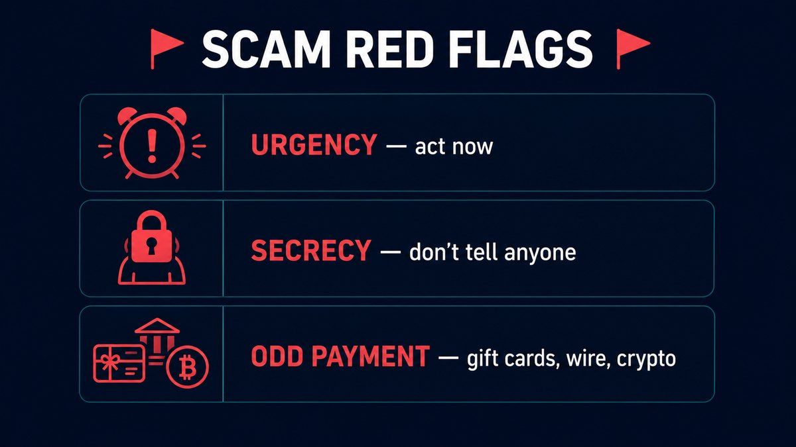
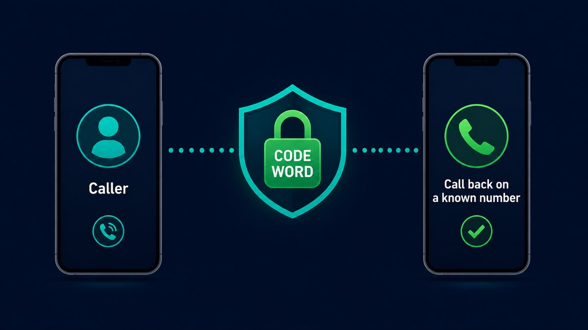

Here's an uncomfortable thing I know because I build voice software: in 2026, an AI can clone a convincing copy of your voice from just a few seconds of audio. Not a robotic impression — your actual voice, your accent, your little verbal tics. And scammers are using exactly this to call people's families.
The FBI and consumer-protection groups have been warning about it all year: a call comes in sounding exactly like your child, your parent, or your boss, in a panic, needing money right now. It's a recording-grade fake. I want to walk through how to protect yourself and the people you love — including the one trick that beats every voice clone, no matter how good.
Why you can't just "listen carefully" anymore
The advice you've probably read — "listen for robotic pauses or weird pronunciation" — is now out of date. A couple of years ago, cloned voices had tells: odd rhythm, flat emotion, little glitches. Modern voice models have crossed what researchers call the indistinguishable threshold: in blind tests, people can no longer reliably tell a good clone from the real person.
I say this as someone who works with the technology: do not rely on your ears. If your whole defense is "I'd know my own daughter's voice," you're defending against 2023's scams, not 2026's. The good news is that the real defenses have nothing to do with how the voice sounds.
The red flags that still work

The voice may be perfect, but the script almost always isn't. Voice scams follow a pattern because the pattern works. Watch for all three of these together:
- Manufactured urgency. "I need the money in the next hour or I go to jail / lose the deal / get hurt." Real emergencies rarely come with a countdown attached to a payment.
- Enforced secrecy. "Don't tell Mom." "Don't call anyone." "This stays between us." Scammers isolate you on purpose, because the moment you check with someone else, the scam collapses.
- An unusual payment method. Wire transfer, gift cards, cryptocurrency, a payment app to a new contact. These are chosen specifically because they're fast and almost impossible to claw back.
Any one of these should slow you down. All three at once is a scam until proven otherwise — even if the voice is flawless.
The one trick that beats every voice clone: verify on a known number

This is the whole game, and it's almost embarrassingly simple: hang up and call the person back on the number you already have for them.
A cloned voice can fake the sound. It can't answer a call you place to your daughter's actual phone. So when you get a panicked call asking for money:
- Don't act on the call you received. Tell them you'll call right back.
- Hang up and dial the person directly using the contact already saved in your phone — not a number the caller gives you.
- If they pick up and have no idea what you're talking about, you just dodged a scam.
- If you can't reach them, contact someone else who'd know where they are before you do anything with money.
Set up a family code word tonight
The single best thing you can do as a family takes five minutes: agree on a code word — a random word or short phrase that only you and your close family know. Not a birthday, not a pet's name (those are findable online). Something nobody could guess.
Then the rule is simple: in any emergency call asking for money or urgent action, ask for the code word. A real family member will know it. An AI clone — and the scammer behind it — won't. It turns an unwinnable "does this sound real?" question into a yes/no one.
Tell the older people in your life especially. The most common version of this scam targets grandparents with a "grandchild in trouble" call, precisely because it's so emotionally disarming. A code word gives them a calm, concrete thing to do instead of panicking.
Reduce how much of your voice is out there
Clones are built from audio of you. The more of your voice is publicly available, the easier you are to fake. You don't need to go silent, but a few sensible habits help:
- Think twice before posting long videos of yourself talking on fully public accounts.
- Be wary of "press 1 to confirm" robocalls — some exist purely to capture you saying "yes" in your own voice.
- If you get a silent call where someone seems to be recording, just hang up.
The 30-second version to share with family
- Don't trust a voice on its own — clones are perfect now.
- Urgency + secrecy + odd payment = scam.
- Hang up and call back on the number you already have.
- Agree on a family code word and ask for it.
A note from someone who builds this
I make a free voice tool myself, for narration, dubbing and accessibility — legitimate uses where you're cloning your own voice or one you have permission to use. The same technology that helps a creator narrate a video is what a scammer points at your family. That's not a reason to fear the tech; it's a reason to change the one habit that makes the scam work. The voice can be faked. A callback to a number you already trust cannot.
If you want to understand how convincing modern voice cloning actually is — so you take this seriously — it's worth reading how the technology and the law around it work. The better you understand it, the harder you are to fool.
Share this with the people in your life who'd panic at a call like that — the code word only works if you set it up before the call comes. Questions? I'm on the contact page.